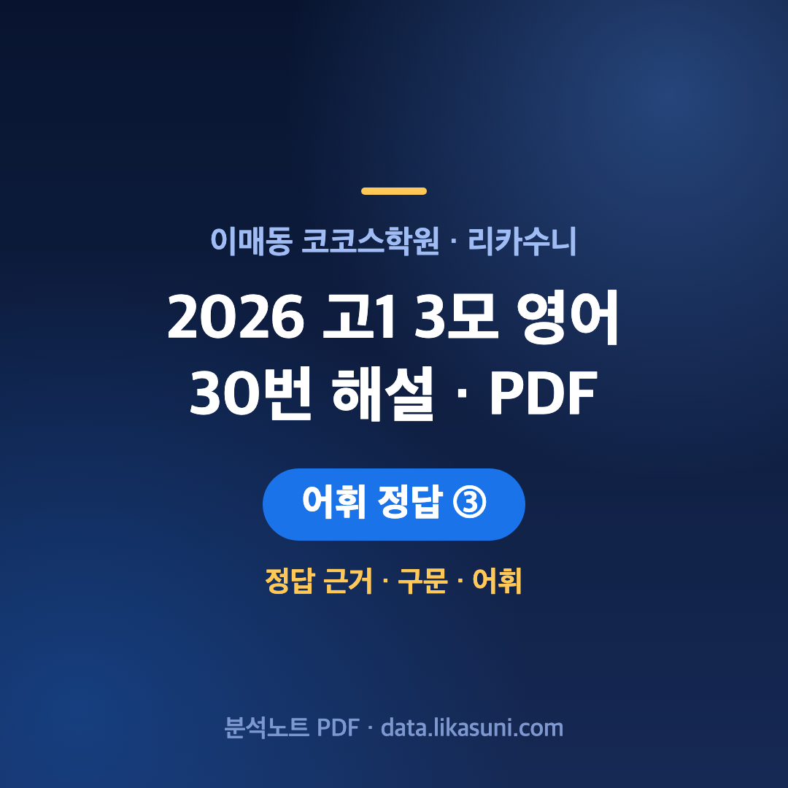
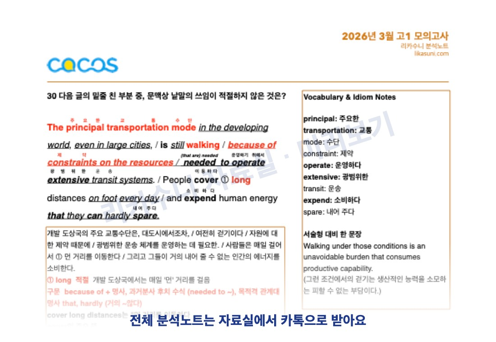

리카수니 분석노트 해설 · 이매동 코코스학원
2026 고1 3모 영어 30번 어휘 해설·분석이에요. (2026 3월 고1 영어 모의고사 30번 · 문맥상 낱말의 쓰임 · 정답 ③ same → opposite)
정답 근거, 오답 거르는 법, 구문(because of + 명사 · 목적격 관계대명사 that + hardly · 도치 among ~ are treadmills), 어휘를 정리했고 분석노트 pdf 받는 곳은 글 아래에 있어요.
안녕하세요, 이매동 코코스학원 리카수니 원장입니다.
학생 요청으로 만든 분석노트를 바탕으로 정리했어요. 시험지를 옆에 펴 놓고 보시면 더 잘 보여요.
| 한눈에 보는 정답 · 시험: 2026년 3월 고1 전국연합학력평가 영어 · 번호: 30번 (밑줄 친 부분 중 문맥상 낱말의 쓰임이 적절하지 않은 것) · 정답: ③ same → opposite (정반대) |
개발 도상국에서 걷기는 피할 수 없는 부담인데, 서구에서는 건강한 활동으로 여겨져서 오히려 러닝머신 위에서 걷는다는 글이에요.
흐름은 개발 도상국: 걷기 = 부담 → However 북미·서유럽: 걷기 = 효율적·건강 → 그런데 아이러니하게도 걷기를 흉내 내는 러닝머신을 쓴다예요.
| · 근거 1: 앞부분에서 개발 도상국 사람들은 매일 먼 거리를 걸으며 내어 줄 여유도 없는 에너지를 쓴다고 해요. 걷기 = 피할 수 없는 부담이에요. · 근거 2: ③ 문장 앞에 however 가 있어요. 북미·서유럽의 태도와 정책은 개발 도상국과 '대조'되는 내용이 와야 해요. · 근거 3: 콜론(:) 뒤에서 걷기는 효율적이고 건강하며 자연스럽다고 설명해요. 부담과는 반대예요. → '같다(same)'가 아니라 '정반대(opposite)'가 맞아요. 정답 ③이에요. |
| · ① long → 개발 도상국에서는 매일 '먼' 거리를 걸으니 적절해요. · ② consumes → 부담인 걷기가 생산 능력을 '소모한다'는 뜻이라 적절해요. · ④ more → 걷기가 좋으니 '더 많이' 해야 한다는 흐름이라 적절해요. · ⑤ accomplished → 러닝머신이 아니었다면 거리에서 이동하며 걷기를 '달성할' 수 있다는 뜻이라 적절해요. 낱말 쓰임 문제는 however·but 같은 대조 신호 바로 뒤 밑줄을 먼저 의심해 보세요. |

▲ 2026 고1 3모 영어 30번 어휘 해설·분석 pdf 분석노트 미리보기
| 1) because of + 명사 / 과거분사 후치 수식 (needed to operate ~) → because of constraints on the resources needed to operate extensive transit systems (2026년 3월 고1 30번) 2) 목적격 관계대명사 that + hardly (거의 ~않다): human energy that they can hardly spare 3) 주격 관계대명사 that / 콜론(:) 뒤는 앞 내용을 풀어 설명 4) 장소 부사구 + V + S 도치: among the most popular exercise machines ~ are treadmills 5) 계속적 용법 which + 조동사 수동태(could be accomplished) / otherwise = 그렇지 않다면 |
| 영어 | 뜻 |
|---|---|
| principal | 주요한 |
| transportation | 교통 / transit 운송 |
| mode | 수단 |
| constraint | 제약 |
| operate | 운영하다 |
| extensive | 광범위한 |
| cover | (거리를) 가다, 이동하다 |
| expend | 소비하다 |
| spare | 내어 주다 |
| unavoidable | 피할 수 없는 |
| burden | 부담 |
| consume | 소모하다 |
| capability | 능력 |
| reverse | 뒤바꾸다 |
| simulate | 모방하다 |
| accomplish | 달성하다 |
| opposite | 정반대(의) |
| treadmill | 러닝머신 |
| 서술형 대비 분석노트에 '서술형 대비 한 문장'(Walking under those conditions is an unavoidable burden that consumes productive capability. 그런 조건에서의 걷기는 생산적인 능력을 소모하는 피할 수 없는 부담이다)과 영어 핵심 요약(Core Summary), otherwise 를 if 절로 바꾼 문장을 정리해 두었어요. cover 의 여러 뜻(덮다·가다·다루다·보도하다·감당하다·보장하다)도 예문과 함께 넣었어요. |
| 📂 2026 고1 3모 영어 분석노트 pdf 받는 법 끊어 읽기·해석·구문·어휘가 정리된 PDF 는 리카수니 자료실 회차 페이지에서 카카오 로그인 후 카톡으로 받을 수 있고, 다른 번호도 요청할 수 있어요. 문항별 해설, 전과목 문제지·정답 pdf 는 같은 페이지 위쪽 회차 메뉴에서 볼 수 있어요. ▶ 2026년 3월 고1 영어 모의고사 분석노트·해설 https://data.likasuni.com/moe/go1/2026-03/eng/ |
Q. 2026 고1 3모 영어 30번 어휘 해설·분석 정답은?
A. ③ same → opposite (정반대)
Q. 분석노트 pdf 는 어디서 받나요?
A. 리카수니 자료실(data.likasuni.com)에서 카카오 로그인 후 카톡으로 받을 수 있어요. 위 안내의 링크로 이동하세요.
이상 2026 고1 3모 영어 30번 어휘 해설·분석 pdf 정리였어요. 궁금한 점은 댓글로 남겨 주세요.
| 🏫 이매동 코코스학원 안내 분당 이매동 코코스학원은 초등·중등·고등 영어와 수학을 가르쳐요. 모의고사·수능특강·내신 대비가 궁금하시면 편하게 문의해 주세요. · 홈페이지: https://www.cocosedu.co.kr/ · 주소: 경기 성남시 분당구 판교로 476 2층 |
#2026고13모영어 #2026고13모영어분석 #고13모영어 #고13모30번 #2026년3월모의고사 #2026년3월고1영어 #3모영어어휘 #3월모의고사영어pdf #낱말의쓰임 #hardly #영어분석노트 #이매동영어학원 #코코스학원 #리카수니